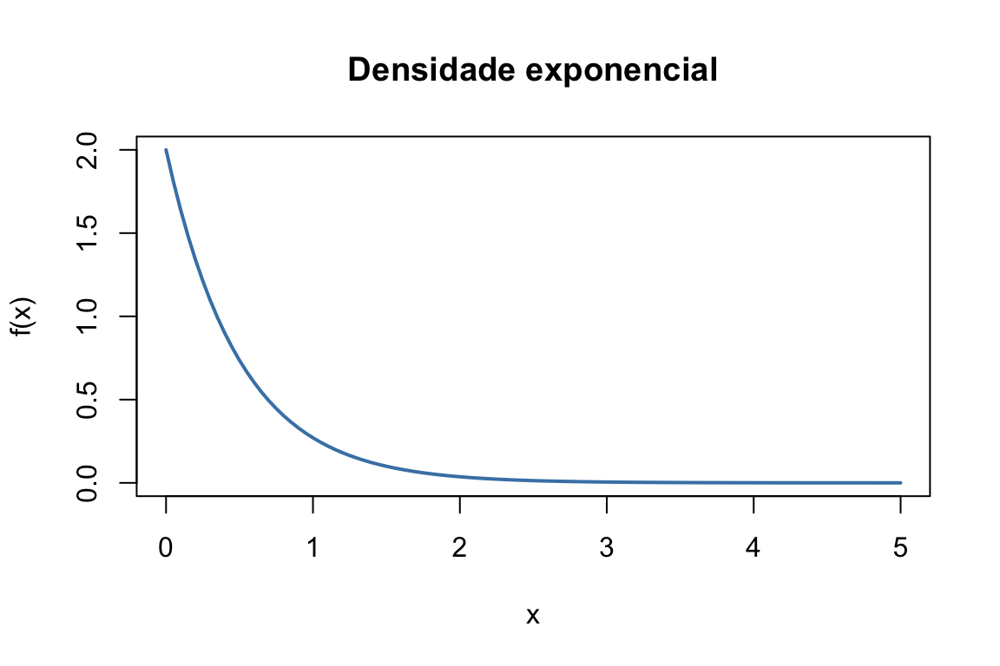
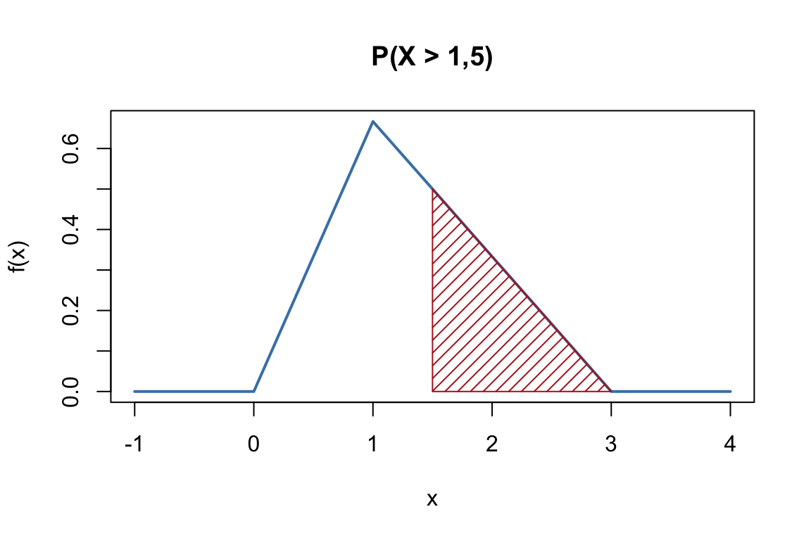

Capítulo 18 Probabilidade e variáveis aleatórias
No capítulo anterior aprendemos a gerar acaso. Agora precisamos da linguagem matemática para o descrever com rigor — a linguagem das variáveis aleatórias, que está no coração de toda a estatística e de toda a simulação.
Uma variável aleatória é uma função que atribui um valor numérico a cada resultado possível de uma experiência aleatória. Formalmente, é uma função que faz corresponder a cada elemento do espaço de resultados \(\Omega\) um número real. Ao lançar um dado, por exemplo, podemos definir a variável aleatória \(X\) como o número da face voltada para cima, que assume valores de 1 a 6.
As variáveis aleatórias são fundamentais porque permitem quantificar e analisar matematicamente fenómenos incertos. Classificam-se em dois grandes tipos:
- discretas — assumem valores num conjunto finito ou numerável, como o número de caras em três lançamentos de uma moeda;
- contínuas — assumem qualquer valor num intervalo, como a altura de uma pessoa.
Neste capítulo revemos as ferramentas que descrevem uma variável aleatória — função de
probabilidade, função densidade, função de distribuição, valor esperado e variância — e
aprendemos a calculá-las no R, com particular destaque para a integração numérica com
integrate().
18.1 Como se descreve uma variável aleatória
A distribuição de uma variável aleatória descreve-se de formas diferentes consoante ela seja discreta ou contínua.
Uma variável discreta descreve-se pela sua função massa de probabilidade (f.m.p.), \(f_X(x) = P(X = x)\), que dá a probabilidade de cada valor. Para ser uma f.m.p. válida, tem de satisfazer duas condições: \[f_X(x) \geq 0 \quad \forall x, \qquad \sum_{x} f_X(x) = 1.\]
Uma variável contínua descreve-se pela sua função densidade de probabilidade (f.d.p.), \(f_X(x)\). Aqui, a probabilidade não está em cada ponto (que é nula), mas na área sob a curva: \(P(a < X < b) = \int_a^b f_X(x)\,dx\). As condições análogas são: \[f_X(x) \geq 0 \quad \forall x, \qquad \int_{-\infty}^{+\infty} f_X(x)\,dx = 1.\]
Em qualquer dos casos, a função de distribuição (acumulada), \(F_X(x) = P(X \leq x)\), acumula a probabilidade até \(x\) — somando, no caso discreto, ou integrando, no contínuo: \[F_X(x) = \sum_{t \leq x} f_X(t) \qquad \text{ou} \qquad F_X(x) = \int_{-\infty}^{x} f_X(t)\,dt.\]
Finalmente, dois números resumem a distribuição: o valor esperado \(E(X)\) (o centro, a “média teórica”) e a variância \(V(X)\) (a dispersão em torno desse centro). As suas definições espelham a natureza discreta ou contínua da variável:
\[E(X) = \sum_x x\, f_X(x) \quad \text{ou} \quad E(X) = \int_{-\infty}^{+\infty} x\, f_X(x)\,dx,\] \[V(X) = E\!\left[(X - E(X))^2\right] = \sum_x (x - E(X))^2 f_X(x) \quad \text{ou} \quad \int_{-\infty}^{+\infty} (x - E(X))^2 f_X(x)\,dx.\]
Repare no paralelo perfeito entre os dois mundos: onde a variável discreta soma (\(\sum\)), a contínua integra (\(\int\)). É a mesma ideia — acumular probabilidade — expressa nas duas linguagens. Guardar este paralelo em mente torna toda a matéria mais simples.
18.2 Exemplo: uma variável discreta
Numa empresa, o número de reclamações recebidas por dia é uma variável aleatória discreta \(X\) com a seguinte f.m.p.:
\[f_X(x) = P(X = x) = \begin{cases} 0{,}10, & x = 0 \\ 0{,}25, & x = 1 \\ 0{,}30, & x = 2 \\ 0{,}20, & x = 3 \\ 0{,}15, & x = 4 \end{cases}\]
Queremos (a) confirmar que \(f_X\) é uma f.m.p., (b) calcular o número esperado e a variância das reclamações, e (c) a probabilidade de haver mais de 2 reclamações num dia.
Para (a), verificamos que as probabilidades são não negativas e somam 1:
Para (b), aplicamos diretamente as definições de \(E(X)\) e \(V(X)\):
E_X <- sum(X_valores * P_X) # valor esperado
Var_X <- sum((X_valores - E_X)^2 * P_X) # variância
E_X
## [1] 2.05
Var_X
## [1] 1.448E para (c), somamos as probabilidades dos valores superiores a 2:
P_X_maior_2 <- sum(P_X[X_valores > 2])
P_X_maior_2
## [1] 0.35Em média, a empresa recebe cerca de 2 reclamações por dia, e a probabilidade de receber mais de 2 é de 0,35.
18.3 Exemplo: uma variável contínua
Seja \(X\) uma variável contínua com f.d.p.
\[f(x) = \begin{cases} 2e^{-2x}, & x \geq 0 \\ 0, & x < 0 \end{cases}\]
(trata-se de uma distribuição exponencial). Queremos (a) confirmar que é uma f.d.p., (b) calcular \(P(X > 2)\) e (c) \(P(0{,}3 < X < 0{,}7)\).
Começamos por definir a função em R:
O seu gráfico mostra a forma típica de decaimento da exponencial:
plot(f1, from = 0, to = 5,
main = "Densidade exponencial",
xlab = "x", ylab = "f(x)", col = "steelblue", lwd = 2)
Figura 18.1: Função densidade da distribuição exponencial de parâmetro 2.
Para (a), a condição \(\int_{-\infty}^{+\infty} f(x)\,dx = 1\) verifica-se por integração
numérica com integrate():
integrate(f1, lower = 0, upper = Inf)
## 1 with absolute error < 5e-07As alíneas (b) e (c) correspondem a áreas sob a curva, ou seja, a integrais nos intervalos pedidos: \[P(X > 2) = \int_2^{+\infty} 2e^{-2x}\,dx, \qquad P(0{,}3 < X < 0{,}7) = \int_{0{,}3}^{0{,}7} 2e^{-2x}\,dx.\]
integrate(f1, lower = 2, upper = Inf) # P(X > 2)
## 0.01832 with absolute error < 2.8e-06
integrate(f1, lower = 0.3, upper = 0.7) # P(0.3 < X < 0.7)
## 0.3022 with absolute error < 3.4e-15A integrate() devolve um objeto com vários elementos; o valor do integral está em
$value. Assim, para usar o resultado num cálculo posterior, escrevemos, por exemplo,
integrate(f1, 0, Inf)$value. Guardar este pormenor evita muita frustração quando se
encadeiam contas.
Quando a forma da distribuição é conhecida, a sua função de distribuição pode ser escrita de forma fechada, sem integrar. Para esta exponencial, \(F_X(x) = 1 - e^{-2x}\) para \(x \geq 0\), e \(P(X > 2) = 1 - F_X(2) = e^{-4} \approx 0{,}018\) — exatamente o valor que a integração numérica devolveu. Comparar o cálculo analítico com o numérico é uma excelente forma de confirmar que ambos estão certos.
18.4 Exemplo: uma densidade definida por troços
A procura diária de arroz num supermercado, em centenas de quilogramas, é uma variável aleatória \(X\) com f.d.p.
\[f(x) = \begin{cases} \frac{2}{3}x, & 0 \leq x < 1 \\[4pt] -\frac{x}{3} + 1, & 1 \leq x < 3 \\[4pt] 0, & x < 0 \ \text{ou} \ x \geq 3 \end{cases}\]
Queremos (a) a probabilidade de se venderem mais de 150 kg num dia e (b) a venda
esperada em 30 dias. Definimos a função por troços com ifelse() encadeados:
Confirmamos que é uma f.d.p. (o integral vale 1) e vemos o seu gráfico — uma densidade triangular:
integrate(f2, 0, 3)
## 1 with absolute error < 1.1e-15
plot(f2, from = -1, to = 4,
main = "Densidade da procura de arroz",
xlab = "x (centenas de kg)", ylab = "f(x)", col = "steelblue", lwd = 2)
Figura 18.2: Densidade da procura de arroz, definida por dois troços.
Para (a), 150 kg correspondem a \(x = 1{,}5\) centenas de quilogramas, pelo que queremos \(P(X > 1{,}5) = \int_{1{,}5}^{3} f(x)\,dx\). Podemos assinalar essa área no gráfico:
plot(f2, from = -1, to = 4,
main = "P(X > 1,5)", xlab = "x", ylab = "f(x)", col = "steelblue", lwd = 2)
polygon(x = c(1.5, 1.5, 3), y = c(0, f2(1.5), 0), density = 15, col = "firebrick")
Figura 18.3: A área sombreada representa P(X > 1,5).
integrate(f2, 1.5, 3) # P(X > 1,5)
## 0.375 with absolute error < 4.2e-15Para (b), a venda esperada num dia é \(E(X) = \int_{-\infty}^{+\infty} x\, f(x)\,dx\); definimos a função integranda \(x\,f(x)\) e integramos. A venda esperada em 30 dias é 30 vezes esse valor:
ef2 <- function(x) x * f2(x)
E_X <- integrate(ef2, 0, 3)$value
E_X # venda esperada num dia (centenas de kg)
## [1] 1.333
30 * E_X # venda esperada em 30 dias
## [1] 40Note-se que os exemplos deste capítulo são simples e poderiam resolver-se
analiticamente, sem métodos numéricos — foram escolhidos apenas para ilustrar as
funções do R. O verdadeiro valor da integração numérica revela-se nos problemas
complexos, em que a solução analítica é difícil ou impossível de obter. É aí que
ferramentas como a integrate() se tornam indispensáveis.
18.5 Exercícios
1. O número de produtos defeituosos numa linha de produção, ao fim de cada hora, é uma variável aleatória discreta \(X\) com f.m.p.:
\[P(X = x) = \begin{cases} 1/10, & x = 0 \\ 2/10, & x = 1 \\ 3/10, & x = 2 \\ 2/10, & x = 3 \\ 2/10, & x = 4 \end{cases}\]
- Verifique se é uma f.m.p.
- Calcule o valor esperado e a variância do número de produtos defeituosos por hora.
- Calcule a probabilidade de haver, no máximo, 2 produtos defeituosos numa hora.
2. Um inquérito numa universidade registou o número de cadeiras em que cada aluno está inscrito. A variável aleatória \(Z\) tem f.m.p.:
\[P(Z = z) = \begin{cases} 0{,}05, & z = 1 \\ 0{,}15, & z = 2 \\ 0{,}35, & z = 3 \\ 0{,}25, & z = 4 \\ 0{,}20, & z = 5 \end{cases}\]
- Verifique se é uma f.m.p.
- Calcule o valor esperado e a variância do número de cadeiras.
- Calcule a probabilidade de um aluno estar inscrito em mais de 3 cadeiras.
3. Numa dada localidade, a distribuição do rendimento, em u.m. (unidades monetárias), é uma variável aleatória \(X\) com função densidade de probabilidade:
\[f_X(x) = \begin{cases} \frac{1}{10}x + \frac{1}{10}, & 0 \leq x \leq 2 \\[4pt] -\frac{3}{40}x + \frac{9}{20}, & 2 < x \leq 6 \\[4pt] 0, & x < 0 \ \text{ou} \ x > 6 \end{cases}\]
- Mostre que \(f_X\) é uma f.d.p.
- Qual o rendimento médio nesta localidade?
- Calcule a probabilidade de encontrar uma pessoa com rendimento acima de 4,5 u.m. e assinale o resultado no gráfico da densidade.
4. Uma variável aleatória contínua \(X\) tem distribuição uniforme no intervalo \([10, 20]\).
- Apresente o gráfico da f.d.p.
- Calcule \(P(X < 15)\).
- Calcule \(P(12 \leq X \leq 18)\).
- Calcule \(E(X)\) e \(V(X)\).
5. O tempo de espera (em minutos) num balcão de atendimento é uma variável aleatória contínua \(Y\) com f.d.p.
\[f_Y(y) = \begin{cases} 0{,}125\,y, & 0 \leq y \leq 4 \\ 0, & \text{caso contrário} \end{cases}\]
- Crie uma função para a função de distribuição acumulada de \(Y\).
- Calcule \(P(Y > 3)\).
- Calcule \(P(1 < Y < 3)\).
- Calcule \(P(Y < 2)\).
- Calcule \(P(Y < 3 \mid Y > 1)\) (probabilidade condicional).
6. A duração, em anos, de uma lâmpada especial é uma variável aleatória contínua \(X\) com densidade
\[f_X(x) = \begin{cases} 3e^{-3x}, & x \geq 0 \\ 0, & x < 0 \end{cases}\]
- Crie uma função para a função de distribuição acumulada de \(X\).
- Calcule \(P(X > 2)\).
- Calcule \(P(0{,}5 < X < 1{,}2)\).
- Calcule \(P(X > 3)\).
- Calcule \(P(X < 3 \mid X > 1)\).
Descrita a probabilidade de uma variável aleatória, o passo natural é conhecer as distribuições mais importantes — a binomial, a normal, a exponencial — e as funções que o R lhes dedica. É esse o tema do próximo capítulo.